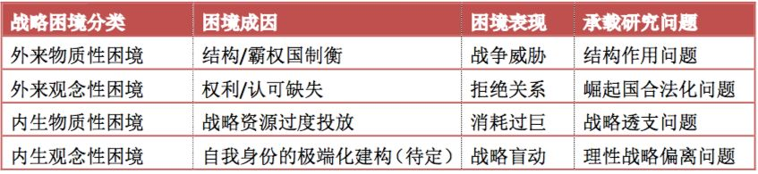
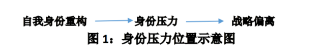
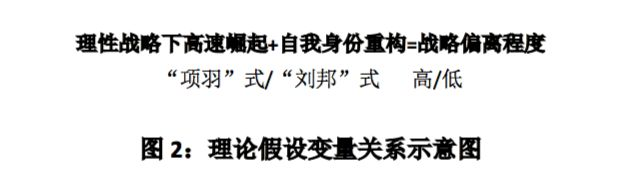
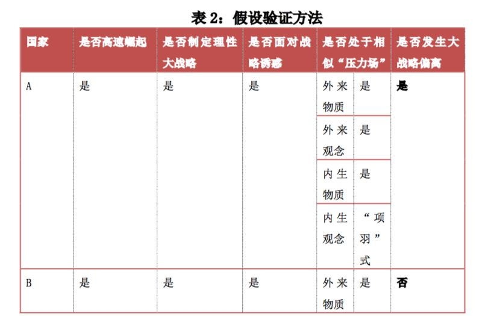
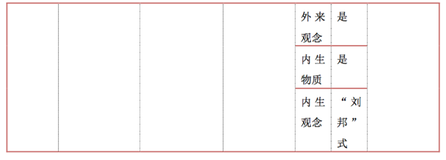
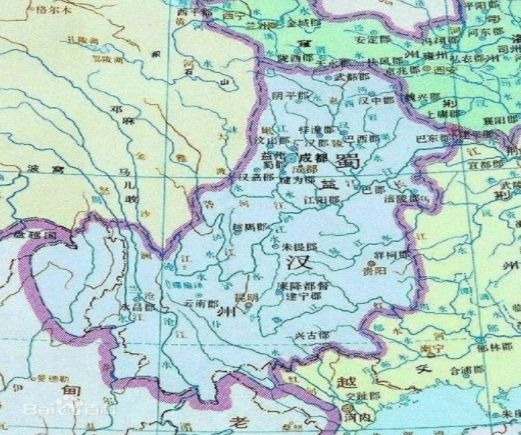
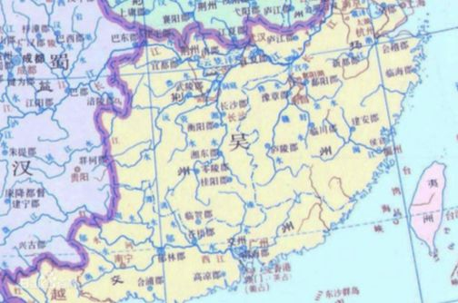
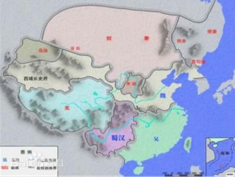

收录于合集
简
张一飞
外交学院国际关系研究所博士
本文受教育部重大攻关项目“中国特色大国外交”（项目编号：15JZD023）的资助，感谢外交学院王帆教授的指点，同时感谢《当代亚太》编辑部约请的匿名评审专家的意见。文责自负。
注：本文经作者授权并国政学人编辑首发，转载需联系授权。篇幅有限，参考文献请见原文。
作 者：张一飞
摘 要
在外部环境相对稳定，且内部战略相对理性的情况下，为什么一个高速崛起大国会突然偏离原有的理性战略而去追求新生的孤立战略目标？文章认为，这种战略偏离源于自我身份重构过程中产生的身份压力，而身份压力则来自于对自我身份的不恰当重构，这是一种内生观念性崛起困境。通过对三国时期蜀汉与江东两大集团崛起过程的比较研究，文章验证了关于内生观念性困境的两种假设：（1）自我身份重构所产生的身份压力区间与对原理性战略的偏离程度之间存在因果关系；（2）在大国因实力上升而进行的自我身份重构中，越倾向于认为“我外皆敌”，则越容易发生对原理性战略的偏离，追求新生的孤立战略目标，进而造成实力的无谓消耗；越倾向于认为“我外皆人”，则越容易坚持原理性战略，抵制新生孤立战略目标的战略诱惑，从而实现持续崛起。因此，所谓“蜀汉困境”就是指大国因“我外皆敌”的自我身份重构产生巨大身份压力，在战略诱惑下偏离原理性战略，进而导致战略失控，甚至崛起势头的丧失。最后，文章还就此探讨了中国在高速崛起过程中的自我身份重构问题。
关键词
高速崛起 理性战略 身份重构 身份压力
在大国崛起的过程中，会出现不同类型的崛起困境。根据压力来源方向的不同，困境可以被分为外来困境和内生困境；根据压力作用对象的不同，困境可以被分为物质性困境和观念性困境。因此，从理论上讲，一个高速崛起的大国至少有可能面对四种困境——外来物质性困境，外来观念性困境，内生物质性困境，以及内生观念性困境。目前，对于前三种困境的研究相对充分，而对于第四种困境的关注相对匮乏。在外部环境相对稳定，且内部战略相对理性的情况下（前三种困境成因没有出现），为什么一个高速崛起大国会突然偏离原来的理性战略而去追求新生的孤立战略目标？须知这种战略盲动很有可能致使其实力迅速损耗殆尽，甚至丧失崛起势头。国家在此情况下会出现哪种或哪些自我身份建构（即第四种困境可能性成因）？自我身份建构与战略偏离之间是否存在因果关系？这是本文所要讨论的主要问题。 _ （本文经国政学人微信公众平台编辑首发）_
一、大国崛起困境的研究现状
大国崛起困境存在一个动态区间，按照严重程度的不同，区间的一端是（软硬）实力受损，而另一端则是（崛起）态势丧失，中间则是从实力损失到态势损失的过程。目前，国内外学界对于大国崛起困境的认知基本处于上述区间之内。相对而言，本文更为关注大国崛起困境的具体成因、具体表现和相关作用机制。

表1：学界关于大国崛起战略困境的研究现状
（一）对于外来物质性困境的研究：现实主义的战争威胁
现实主义开辟的物质性结构作用的研究传统对于解释崛起大国面临的战争风险始终保持着巨大优势。 肯尼斯.华尔兹在潜意识中对于大国的高速崛起存在价值上和策略上的双重抗拒心态，他认为，即使站在大国自身的立场上，过分膨胀的权力也会招致国际结构的制衡，因为结构本身具有强大的“均势趋势”。在“无政府状态- 相似功能- 权力大小”的简洁模型中，他甚至悲观地认为，“我们不能希望强大的行为体会奉行恰好正确的政策，而只能希望它们不会全部做错”。进攻性现实主义的开创者约翰.米尔斯海默则将“困境”进一步演化为“悲剧”，他在华尔兹的基础上对国际关系的现实进行了更深一步的破题，尽管他同样认为“结构因素如无政府状态和权力分配等是解释国际政治的最关键部分”，但是，在增加了“国家永远无法得知其他国家的意图”这一假定之后，国际结构便成为了进攻意图与进攻能力共同组成的“黑暗森林体系”，高速崛起的大国面临的是来自外部结构的“每一个人反对每一个人的战争”，崛起大国注定陷入争霸消耗的轮回。 在这两种理论中，物质性压力都来自外部结构。
对于现实主义经典理论形成有益补充且具有代表性的中观理论来自 权力转移理论和威胁制衡理论 ，前者代表了霸权制衡的点状视角，后者代表了制衡对象的面状视野。 奥根斯基的权力转移理论认为，与霸主国实力之间实力对比的变化是导致崛起国选择武力方式挑战霸主国的根源。按照权力转移理论的基本逻辑，崛起大国通常会对现有的国际秩序不满，主导大国则会努力维持现有秩序以确保既得利益”，这种结构性矛盾发生在霸权国与崛起国之间，“特别是当大国间权力的再分配出现‘持平’趋势时，战争爆发的可能是最高的”。从本质上讲，他关注的仍然是崛起大国面临的来自外部的物质性压力，只不过尤其突出强调了霸权国这一变量。斯蒂芬.沃尔特则集中研究了威胁的构成要素，比如综合实力、地理毗邻性、进攻能力以及进攻意图，但这些都是针对威胁释放者（比如高速崛起大国）而言的分析，释放威胁的结果主要表现为他国结盟所造成的自身的权力劣势。因此，沃尔特所探讨的结盟问题在本质上讲仍然是外部力量（因多样性原因）对国家造成物质性困境的问题。
这些中观理论又被一些学者进行了发展和演绎。 比如，阎学通的“道义现实主义理论”将“权力”拆分为“影响力”和“实力”，并对物质实力所产生的影响力部分进行了演绎；孙学峰的“战略困境缓解说”认为，崛起国将安全压力保持在其能承受的范围之内；罗伯特.吉尔平的“霸权更替说”认为，权力结构的上位者都存在着先发制人的冲动，霸权战争不可避免；乔治.莫德尔斯基的“历史长波理论”提出，霸权国位置的更替与全球霸权战争都具有一定的周期性；伊芙.恒林的“中国不满论”更是直接把中国描述成一个全世界共同面对的军事威胁，认为世界和平前途暗淡。另外，道格拉斯.莱姆基与苏珊娜.沃娜的权力转移分层理论，罗伯特.杰维斯的威慑、螺旋理论，罗伯特.卡普兰的中国地缘政治危机分析，拉扬.梅农（Rajan Menon）的增长速率差异化理论（根据数据预测中美必有一战，并未超出现实主义物质决定论的范畴）等，都属于在物质结构作用或攻守二元框架下进行的外来物质性困境研究，这种研究深具古典意味，是崛起困境研究的坚实基础，强调生存永远是第一要务。“在战争与和平的框架下，两种对战争的治理主张最具代表性：一种是‘以战争结束战争’的军事治理；一种是以建立国际秩序的政治治理”。而面对外来物质性困境，西方学者普遍倾向于军事治理。
（二）对于外来观念性困境的研究：改变秩序者的合法化障碍
大国崛起不仅意味着物质实力的快速上升，更重要的是要被国际社会所接受和承认，于是其观念性困境往往与物质性困境同步或稍后出现。对新成员或新霸主身份的接受和认可集中体现为崛起大国的合法性获取，因此，承载这一困境的主要研究问题是崛起大国的合法化问题。从崛起困境产生和消除的角度讲，其中至少涉及三个子问题：第一，什么是国际关系中的合法性？第二，合法性的来源有哪些？第三，如何获取合法性认可？
阿里夫.德里克 认为 , 中国崛起的合法性风险事出多元，不仅仅包括对于已经稳定的“美国秩序”的挑战，更在于其崛起能否给世界带来“在旧秩序被破坏后新秩序可以被建立”的预期。 他认为，中国的崛起是以牺牲环境为代价的、带有文化输出意识的、以金钱收益为主要外交目的，他在表示悲观的同时提醒资本主义国家应该对于以中国为代表的这类崛起国保持高度警惕。这就将中国崛起的主要问题从物质性的战争风险导向了观念性的人心向背。他暗示了合法性的秩序属性，认为崛起国的合法性取决于它能否为世界建立新的良性秩序，其崛起过程中的表现则使其他国家对其建立新秩序的能力产生了预期，崛起合法性的获取过程就是对于这种预期的影响过程。
伊万斯.梅德罗斯 将崛起国合法性归结于其言行一致的程度，即国家战略是否体现了对外宣称的战略目标。 基于这种认识，他指出，中国崛起的合法性问题非常值得商榷，因为中国宣称其对外战略目标是“营造一个和平环境，使中国能够更好地维护和平，促进发展，开展合作”；但是中国对内始终牢记“百年国耻”等理念，对外积极重塑美国制定的各种地区和全球规则，这就使得其身之所行与口之所宣发生了一定程度的脱节，造成了崛起中的合法性困境。因此，他认为中国应该把注意力更多地转移到解决国内的社会问题上，真正融入国际社会，而非过多地强调历史与威胁。
尽管这两位国外学者对于中国崛起存在一定程度的误解，但是他们对于崛起过程的关注符合一个国家合法性从产生到稳定的规律，认为崛起国的外来困境主要集中在这个阶段。相比之下，国内学者更加关注的是国家崛起后的效果，这对于前者而言是一种有益的补充。
周方银 别出心裁地关注了已经成长为霸权国的国家（比如春秋时期的齐国）及其合法性防御问题，他从霸权国（或随后成为霸权国的崛起国）的角度出发，探讨了松散的等级体系中大国的合法化战略 。 首先， 他把合法性定义为“第一大国的政治地位以及与此相对应的在体系内发号施令的权利”。这一定义本身就暗示了国际体系对于这种不对等权利有可能产生抵触，尤其对于崛起大国而言，获得实力优势只意味着崛起的前提存在，而守住合法性才意味着崛起的大功告成。 其次 ， 他认为合法性的来源主要包括道义制高点、对体系的稳定作用，以及对其他大国的威慑。 最后， 他提出的霸主合法化战略即为以“尊王”抢占道义制高点，以释放稳定信号安抚其他体系成员，以道义和实力的双重优势威慑有挑战意图的大国。在这三种策略的推进下，“霸主获得的权威和具有合法性地位，会在会在诸侯中产生一种服从霸主的义务”。这同样说明如果崛起国（尤其是在已经崛起为霸权国的情况下）只迷信实力而不使体系内的成员对新霸主产生身份认可，则有可能使崛起戏剧性地“中断”于“完成”之后。
杨原 和 ****孙学峰 **** 对合法性的定义有不同的见解。他们认为，大国合法性的根本问题是“除了暴力强制手段之外，如何能够获得和维系统治地位和权威”？换言之，合法性的形成和实践是同一个过程——“合法性就是对统治权的认可”。 这一定义将视角移至了周方银对合法性定义的前一阶段：“认可”发生于“权利”之前。在此基础上，他们具体而全面地梳理了英国学派、建构主义和现实主义等国际关系理论对于合法性的来源与分类研究，并指出建构主义颇具代表性，它发现“具有合法性的国际规范和观念对国内政治甚至具有革命性的影响力”。这是对外来观念性压力的经典描述。但是，他们同时承认，“多年来国际关系学对合法性的关注和研究不是特别充分”。尽管如此，只要还是在合法性的研究框架内对崛起国的认可和制衡问题进行探讨，就没有超出外来观念性困境研究范畴。观念性困境并不必然导致物质性困境，但是却会增加物质性困境发生的概率，因此，在杨原和孙学峰看来，合法性问题是和制衡规避策略相联系的。
另外，在关于中国崛起的合法性问题上，周方银和孙学峰都敏锐地发现东亚地区对于中国新身份的认可障碍：一方面，东亚在经济上越来越依赖中国；另一方面，中国在能力和意愿上暂时都不能对东亚提供安全保障。更多的东亚和东南亚地区国家基本认可了安全上靠美国和经济上靠中国的二元结构。这种境遇本身就体现了合法性身份认可的撕裂——只有经济领域被认可。 就目前来看，外来的观念困境暂时并未给中国崛起带来过多的显性干扰，但是它却有可能在将来使中国的和平崛起迟迟无法完成最后的“临门一脚”。而孙学峰所描述的“美国依托其东亚同盟体系与日益崛起中的中国协调，共同塑造地区规则，维护地区安全稳定”这一新自由主义蓝图，短期内在东亚地区诸多敏感问题中（尤其是重大安全问题，比如朝核问题和领土争端问题）可能尚难成真。
上述学者从身份认可和观念形成的角度，借中国身份合法化问题指出了崛起国所面临的外来观念性困境，是对现实主义物质性困境的一种延伸，甚至在一定程度上为 亚历山大.温特 的结构建构主义提供了方法论参考。
（三）对于内生物质性困境的研究：战略资源的透支
无论是处于理性考虑还是激情追求，大国在崛起过程中面临的内生的物质性困境已经引起了学界的广泛关注，这一困境的问题载体是崛起大国战略透支问题。所谓战略透支是指“一国战略资源消耗超过了实现当前战略目标所必须的程度，做了力所不能及或费力不得好的战略或战术选择”。 从战略透支的形成和防范来讲，其中涉及两个问题：第一，为什么会产生战略透支？第二，如何防范或缓解战略透支？
在对有关中国的战略透支问题研究中， 安德鲁.斯科贝尔 为中国的外来物质性困境演绎出内生物质性成因。 他认为，多年来“被压迫国”的情感经历使中国很难感受到自身崛起对于外部世界造成的震撼。更为重要的是，这种“被压迫国终于翻身”的体验使中国极易陷入对于权力声誉的追求，进而过分地牺牲其他目标而专注于物质实力发展所带来的“国家自尊”，最终导致在安全困境中应对不暇，陷入战略透支。这种内生困境是一种由“唯物质论”、“唯优势论”与“唯权力论”所产生的战略失调，其中，国家战略目标表面上看仅仅是侧重物质实力发展，而本质上却是以消耗国家元气与发展潜力为代价的“慢性自杀”（这也是苏联从称霸到解体的历史教训）。但是，斯科贝尔还没有彻底摆脱外来物质性困境的思路，只是指出了外来物质性压力的一种内部成因。
即使是对于中国崛起十分乐观的 马丁.雅克 也指出了中国有可能因为不恰当的战略安排导致国内出现失控局面。 他认为如果中国进行过度的外向型扩张战略而忽视国内民生和就业问题，将会使国内贫富差距越来越大，最终丧失发展潜力，更兼目前高速发展所带来的资源和环境问题已经成为巨大隐患，这些都需要中国适当考虑转变经济发展方式以及国家对外战略，形成一种“低速高质”的发展模式。雅克在物质层面就国内发展模式而非国际安全形势讨论中国的崛起问题，主要是基于他对中国应对外部危机的信心——在他看来，中国崛起最大的对手正是中国自己。
高程 将有可能造成战略透支的原因归结于对经济手段的过分依赖以及对非经济手段的运用能力不足。 一方面，她敏锐地发现了中国惯于使用经济手段处理国际关系所存在隐患，“继续过度依赖经济让利和承担国际责任的方式谋求良好关系和国际政治地位，可能出现透支中国经济能力和战略资源的风险”；更为严重的后果是“导致周边国家试图摆脱或降低与中国的不对称经济依赖关系”。另一方面，她还指出了中国目前在高级政治领域投入与产出的不对称性，物质实力不能充分转化为施加影响的能力，外交努力事倍功半。这两种导致战略资源投入与目标实现效果不匹配的原因都会直接导致物质崛起迟滞，甚至使实力受到元气性伤害而得不到逆向补充，造成战略透支。就此，她提出了政治干涉、军事威慑和经济手段并用的综合崛起方案。
孙学峰 对战略透支的研究主要集中在战略时机和战略对象的选择方面 。就崛起国战略透支的成因而言，他认为存在两种诱因：“一是处于超越阶段时主动使用武力挑战主导国核心利益，进而陷入多面作战，结果遭遇战略透支，崛起进程终结；二是处于追赶或相持阶段主动使用武力挑战主导国次核心压力，导致外部压力超越自身承受能力，结果遭遇战略透支，崛起势头逆转”。[36]不难发现，这种战略透支的成因起点和结果终点都是内部的，而且是物质性的。它的关键词是“主动”“挑战”“主导国”，这是出于对物质实力的自信而产生的战略躁进，只能通过自我管控避免物质性伤害。
相比之下， 时殷弘 对于战略透支的研究更为宏观，他通过历史研究抽象出了战略内在平衡（战略透支的反面）的概念， 认为“战略失衡”（即战略透支）的表现为“入不敷出，乃至在最糟情况下资源耗竭，能力耗竭”。这进一步说明战略透支是内在物质性困境的集中体现。对此，时殷弘引用了大量中国古代道家思想，提倡保持“战略冲动与战略审慎之间的平衡”，尤其指出“中国在最近三年这么短的时间里，开辟或固话了那么多‘新战场’或‘新战线’，但其中没有哪一个短期内是能够定胜负的”。这值得战略界从内生物质性困境的角度防微杜渐。
上述学者的审慎态度与忧患意识使大国崛起困境的成因从结构层次回归到国内层次。以战略透支为焦点，他们普遍对战略目标的设立限度，或者战略资源在单位时间内的过度投放提出了警示，并立足中国实际，对物质实力转变为战略能力过程中可能遇到的战略困境进行了深刻剖析。至此，对战略困境的研究视角已经从外转内。
（四）对于内生观念性困境的研究：缺少内容
目前，前三种困境都得到了相对成熟的关注和分析，甚至其各自承载问题也都得到了相当程度的缓解和解决，但是逻辑上和现实中都存在的内生观念性困境却并未得到深入和系统的研究，甚至没有得到广泛关注。 这种忽视似乎印证了社会科学中这样一个事实，“正像存在具有容易被人忘却的倾向，人的存在也有一种本来就有的按照海德格尔所说的沉沦的倾向”。
目前比较具有暗示性的研究成果来自人性现实主义以及文化现实主义，但是两者既不成熟也不直接。 ****汉斯.摩根索提出的人性现实主义将战争的根源归结于好战的人性，他提出的“现实主义六原则”中的前两条，即政治根植于人性，利益介定乎权力，已经提供了相当的暗示——政治活动中的一切幸与不幸，都是人性的产物，虽然无法证伪，却也无法避免。因此，大国崛起困境最深刻但却显性的根源至少应该与人性中的观念有直接关系。这种猜想似乎带有某种宿命色彩，但是，似乎难以将人的观念和人性的内容一一对应，人性是否作用于观念更加无从谈起，大国崛起的内生观念困境也就无从探索。
另一种尝试来自 江忆恩 的文化现实主义。 江忆恩将战略文化定义为“一套有机完整的符号系统（即论证结构、语言、类比、隐喻等），通过形成关于军事力量在国际政治事务中的作用和效用的概念，以及将这些概念套以合法性光环以使战略偏好看起来具有独特的现实性和有效性，从而建立起普遍和持久的大战略偏好”。这个所谓的“符号系统”由两部分组成：“第一部分包括战争环境秩序的基本假设，即关于战争在人类事务中的作用（是偏离常规的还是不可避免的）；关于敌人及其威胁的性质（是零和性的还是非零和性的）；关于使用武力的效用（即关于控制结果与消除威胁的能力，以及关于使用武力在何种条件下是有用的）”。“第二部分包括更具体操作性的假设，它涉及针对上述三个问题的解答中所定义的威胁环境，选择哪些应对的战略最为有效”。由此，对于大战略偏好的选择就集中在对第一部分三个问题的回答。这种理论固然尊重了人的主观能动性，但是，无论国家选择进攻、防守或求和，其选择本身没有好坏，更不必然带来祸福。虽然战略文化是内生的，且作用于观念，但也无法与对应的战略困境相绑定。
具有更大启示性的相关研究来自 爱德华.弗雷德曼 。 他认为,尽管中国崛起是中国主动接受世界规则的社会化过程，但是，随着中国综合国力的持续上升，中国在观念层面有可能出现极端民族主义或者回到传统“封贡体系”的倾向。这一研究为内生观念性困境建立了一种比较合理的生成模式，即“一个原本具有理性的国家发生了理性偏离”，在他的研究中，中国接受并融入世界规则是理性，而产生民族主义或者回归“只存在于理想中的封贡体系”是一种对理性的偏离。
然而，上述对于内生观念性困境的探讨既不直接亦不系统，更重要的是没有明确提出内生观念性困境的承载问题。这就为起于内部、作用于观念的崛起困境研究提供了空间。
二、问题的提出和理论假设的建立
（一）问题的提出
**本文认为，要构建完整的崛起困境光谱，就必须以具体问题承载内生观念性困境研究。在这种困境中， “内生”意味着战略主体并未与外部主体进行物质或观念互动（否则在本质上仍然属于外来困境），“我”既是施力者，也是受力者；“观念性”意味着战略主体的作用对象是自己的观念和身份。**两者结合来看，内生观念性困境主要来自对自我进行的身份建构。表面上看，由于身份建构来自不同主体间的关系性互动，“自我”和“建构”似乎存在矛盾，但是，在实力转型有可能引发的身份转型中，“现在的我”与“过去的我”之间在时间上而非空间上的互动仍然提供了身份重构的实践空间，且无论在时间还是空间维度来看，“个体力图维持或提高其自尊——他们力图获得积极的自我概念”。因此，内生观念性困境是“自我面壁”的产物，其内涵是在实力崛起背景下（实力崛起之前可能处于身份动荡状态），战略主体对自我身份进行了不恰当重构，这种重构会产生身份压力，而身份压力又会作用于现实政策。既然是“建构”，“其概念和内容可能既非历史中发生的事，亦非现实中发生的事”；既然是“重构”，其产生的身份压力便最有可能集中表现在对“前身份”下制定的原理性战略的否定和偏离。

结合历史观察，本研究将提出研究问题：为什么高速崛起大国会突然偏离原来的理性战略而去追求新生的孤立战略目标？ 需要区分的是，在内生物质性困境中，原战略即为非理性战略；而在内生观念性困境中，并非不存在理性战略，而是发生了对理性战略的偏离，这更突显了观念与身份压力的作用。
（二）假设的提出
假设 1 ：自我身份重构所产生的身份压力区间与原理性战略的偏离程度之间存在因果关系。
这里需要界定理性战略与自我身份建构的定义。第一，理性战略的具体内容可能多种多样，但是在特征层面却具有相对一致性。 普遍而言，理性战略应至少具备三种核心特征：（1）阶段性，即围绕战略目的设置合理的阶段性战略目标，“凡属带有要照顾各方面和各阶段的性质的，都是战争的全局”，[47]战略执行要有章可循，实力发展要循序渐进；（2）时机性，即主动将自身发展与环境变化相匹配，在最正确的时间，最大效力地发挥力量，以推动战略实现，这也是对《孙子兵法》所谓“先为不可胜，以待敌之可胜”的准确诠释；（3）整合性，即针对不同阶段的战略目标以及最终的战略目的，对其他战略主体进行符合战略需要的敌友关系整合，这也符合毛泽东“团结一切可以团结的力量，首先解决主要矛盾”的战略思想。因此，理性战略可以被定义为一种实施阶段分明、爆发时机准确、关系整合灵活的资源使用规划。
第二，自我身份建构的内容应处于某种身份区间之内，而身份必然处于某种成对出现的关系之中。 因此，自我身份建构的核心内容涉及“自我与他人关系的性质”，这是自我身份建构的关系背景。这种关系性质的两个极端分别是“项羽式”和“刘邦式”的自我认知：前者认为“我外皆敌”，即使“我”以外的战略主体数量大于一，对于“项羽式”的自我认知也没有任何战略意义，因为其存在唯我独尊，无亲无友，无论他者之间的关系为何，“我”是“所有他者”的敌人。后者则认为“我外皆人”，至少在“我”以外战略主体数量大于一的情况下，可以进行敌友区分，而且应该尽量维系更多盟友，“我”是众“人”之一，而“人”这一中性存在是可敌可友的。
就“我与他人关系的性质”所产生的敌意感受或者说身份压力而言，“项羽式”建构明显大于“刘邦式”建构。这就推导出了假设2的具体内容。
假设 2 ：在大国因实力上升而进行的自我身份重构中，越倾向于认为“我外皆敌”，越容易发生对原理性战略的偏离，追求新生的孤立战略目标，进而造成实力的无谓消耗；反之，越倾向于认为“我外皆人”，则越容易坚持原理性战略，抵制战略诱惑，实现持续崛起。 具体如图2所示。

这种变量关系假设符合自我身份建构区间与理性战略特征的逻辑对应关系。“项羽式”的自我身份建构以“我外皆敌”为特征。 首先，这容易使战略主体因产生巨大的敌意感受而模糊自卫与进攻的边界，使战略的阶段性设计受到严重的心理干扰；其次，这容易使战略主体忽略其他战略主体之间的矛盾，将其视为铁板一块，进而将战略设定为对“所有他者”的蚕食或者鲸吞，而错失有可能利用“不同他者”的敌对关系，使战略的时机性和整合性荡然无存；最后，由于这种自我身份建构根本不存在战略关系的整合空间，很容易使战略决策者滑向“物质实力总决战”的极端心态。相反，“刘邦式”的自我身份建构以“我外皆人”为特征。首先，这就将战略设计置于一个更为宽松的心理环境里，较小的身份压力会使战略设计更为从容，也更容易浮现并重视战略的阶段性特征；其次，这将战略对象视为各自具有主观能动性的不同利益主体，“寻隙而动”成为理智的战略选项，对于战略时机的把握成为战略的题中之义；最后，这也为战略整合提供了可能性空间，甚至使整合性成为维持战略大局以及实现战略目的之必须，这种整合性又间接支援了理性战略的阶段性和时机性。
可以通过案例研究中的最相似（ most-similar ）方法对这两大假设进行对比研究。 如果存在两个大国，它们都实现了高速崛起，在高速崛起之前都制定了理性大战略，在高速崛起之后都面对战略诱惑（即新生的孤立战略目标），而随后出现的战略失控程度不同，即对于原理性战略的偏离程度不同，则两个大国在战略困境格局中的不同之处即为导致其战略偏离程度不同的原因：（1）如果这两个大国所面临的外部物质压力、外部观念性压力以及内部物质性压力相类似，且观察发现其内生观念性压力不同，则可以确定不同的自我身份重构是导致其战略偏离程度不同的原因，则假设1得以验证。（2）同时，在考察两个大国各自的身份重构内容中，亦可对假设2进行验证。即：


_ （本文经国政学人微信公众平台编辑首发）_
_ **
**_
三、案例研究：蜀汉集团与江东集团的比较研究
“由于国际关系事实的发生与演进有着非常复杂的过程，研究者即使亲临其境，也不可能进行完整而全面的观察，因此从研究角度所讲的‘观察’，虽然包括直接的所见所闻，但多数情况是指见解地阅读记述国际关系事实的文本。”在下文的案例研究中，对于文本的使用可能存在不可避免的主观解读问题，但是，这并不妨碍在了解史实全貌的基础上，对于具体战略进行的把握和推演。
（一）关于“古中今外”历史经验的可通约性说明
回顾中国古代历史会发现，在很多王朝的衰落时期，均出现了类似于欧洲近代主权国家体系中多个权力中心并立的局面。中国古代的这些多个权力中心处于准主权国家状态，至少已经符合“对内最高，对外独立”的主权特征——无论是春秋战国时期的诸侯割据，还是东汉末年的群雄并起，这些地方权力集团都可以自行处置内部事务，绕过当时名义上的最高统治者各行其是，至少是产生了自主决定“是否服从名义权威”的选择区间。 大部分情况下，割据诸侯虽然在普通事务和大义名分上，仍然对名义上的天下共主保持尊重，但在与自身核心利益相关事务中却并不被更高权力所左右；在对外关系中它们相互承认彼此的权力地位，达成了一些明确的国际关系准则。 “它们拥有独立的军队，管理着固定的领土和人口，有对外交往的合法权力，能独立地制定各自的内外政策，在它们之上，并无一个能控制和指挥它们活动的上层结构和超国家权威”，“即使用现在的主权国家来衡量，它们也完全合乎国家的定义。” 因此，诸侯割据体系可以与主权国家体系在一定程度上相互通约。
有可能对两者通约造成障碍的是另外两个问题： （1）主权不可分割而诸侯可被灭亡；（2）主权国家体系下的“国际关系”概念产生于1648年之后，而诸侯割据体系大多存在于1648年之前。但是，这两者所造成的障碍多存于主观的概念界定而非客观的现实政治层面。第一，主权不可分割不等于主权可以永存。主权必须以政治为载体，实体灭亡之后，主权自然消失，割据诸侯的可消灭性和主权的不可分割性并不矛盾。事实上，即使在一战和二战之后，欧洲也都出现了国家这一政治实体的生成或消亡，主权自然随之生灭（而未分割）。第二，“国际关系”在客观上发生于多个权力中心互动之后，而不必须发生于某个历史事件之后。“所谓国际关系发端于欧洲三十年战争和《威斯特伐利亚和约》的说法并不准确”，一是因为在此之前已经存在国家之间的互动；二是因为威斯特伐利亚体系也不过是地区性系统，远远称不上当时的国际社会体系。因此，无论从中国古代分裂时期的地方权力中心与主权国家之间的可通约性，还是从这些权力中心之间关系与国际关系之间的可通约性来看，都不妨碍将中国古代分裂时期的国内格局最大程度地视为国际格局，并对其反映出的国际关系规律有所借鉴。
分析一种政治现象，其目的是寻找出政治现象背后的深刻成因和普遍原理，并为与该现象相关的战略行为注入更多理性。这是一种从具体历史到普遍原理，再从普遍原理到具体现实的过程。以下将选取中国历史上三国时期蜀汉集团和江东集团的崛起过程作为样本进行比较研究，原因在于：（1）这两个权力集团的崛起背景相似，都是在短期内实现了高速崛起，都制定了理性大战略，且在崛起过程中都面临着战略诱惑。（2）蜀汉集团在崛起巅峰时刻突然偏离原理性战略，丧失了崛起势头；而江东集团始终保持崛起态势，成为魏蜀吴三国中存在时间最长的国家，两大集团的战略结果差异甚大。（3）两大权力集团崛起过程中面临的大部分困境压力类型相似，值得探索其困境压力类型与内容的不同之处。
（二）蜀汉集团与江东集团的崛起背景比较
首先两大集团都实现了高速崛起
**1. **蜀汉集团（早期为刘备集团）的崛起过程是在较短时间内完成的，大致可以分为三个阶段
第一阶段为转战中原阶段。刘备集团先后投靠公孙瓒与袁绍作战，投靠陶谦与吕布作战，投靠曹操与吕布作战，投靠曹操与袁术作战，投靠袁绍与曹操作战，投靠刘表与曹操作战。在这一阶段，刘备集团不仅缺失战略目的，而且战略手段仅限于力保生存的简单结盟。
第二阶段为赤壁之战阶段。赤壁之战前刘备集团发生了命运转折——诸葛亮加入刘备阵营，并提出“隆中对”战略。这一战略可以分为四个战略步骤：跨有荆益两州——待天下有变（等待过程中内修政务，外结孙权）——益州主力进攻秦川方向，荆州兵进攻宛洛方向——统一天下，成就霸业。赤壁之战后，刘备集团迈出“隆中对”战略的第一步，通过南征荆襄四郡完成了对荆州的统一。
第三阶段为迅猛发展阶段。在此阶段，刘备集团迎来战略机遇，刘璋邀请刘备入川，蜀中精英张松、法正为刘备占有益州提供了战略便利（包括战术准备和战争借口），刘备军围困成都，刘璋投降，刘备集团完成了“隆中对”战略的第一步，跨有荆益。此后在经历了与东吴的短暂龃龉后，刘备集团开始攻略汉中并最终战胜曹操军，成为占有大半荆州（与东吴瓜分荆州）、益州和汉中的三极之一，刘备称汉中王。
从黄巾起义开始至刘备称汉中王的短短三十六年间，刘备完成了从安喜尉到汉中王的转变，刘备集团也迅速崛起为实质上的蜀汉集团（称帝稍晚），且仍然处于上升状态。

蜀汉（221年5月15日—263年）
2. 江东集团作为准大国的地方权力中心也实现了高速崛起
在前孙权时代，继孙策在不到十年的时间里奠定了江东雏形之后，孙权接任江东之主，又多轮扩张了东吴基业，从建安五年到建安十三年赤壁战前，又不到十年的时间里，孙权实现了以下政绩：“镇抚山越（南部山地民族），讨不从命”；平定上饶地区，建县管辖；攻破黄祖（军阀），平定六县；至刘备称王前的建安十九年，完成了收复半个荆州；建安二十四年夷陵之战前，偷袭关羽，收复整个荆州。至此，江东集团崛起至巅峰状态。即使在夷陵战后，荆州也大体处于江东集团的控制之下或直接威慑之下。孙权从“深险之地犹未尽从”的领会稽太守，成为实质上拥有独立王国的吴王。在孙权执政前期的十九年中，江东集团无论在地域、人口、资源等硬实力方面，还是政治合法性等软实力方面，都完成了三分天下有其一的质变，应该说，其崛起速度甚至远超蜀汉集团，且综合实力并不逊色于后者。
其次，两大集团都拥有理性战略规划
1. 蜀汉集团的“隆中对”战略是理性战略的集中体现
诸葛亮制定的“隆中对”战略清晰地体现了理性战略的阶段性、时机性以及整合性。第一，“隆中对”战略强调统一天下的军事阶段性：占据荆州 进取益州 两路北伐。这是战略方向明确，后来也证明具体可行的军事规划，一改刘备集团在转战中原阶段的盲动状态。“隆中对”战略前半程的成功充分印证了战略目的和战略目标的区别和关系：“战略目的是一定时期内国家在国际社会中运用国家实力所要达到的最终结果”，而“战略目标是一段时期内在国际社会中为维护国家利益的安全而要达到的全局性结果，但不一定是最终结果”。战略目的要通过完成逻辑完整的各阶段性战略目标得以实现。
第二，“隆中对”战略的关键节点在于把握时机。“待天下有变”是完成军事战略的必要政治前提。事实上，蜀汉集团后来急转直下的重要原因在于在时机并不成熟的时候开始运作军事统一。这里的“变”既包括战略对手出现失误之举的迅猛变化，也包括天下人心向背发生转移的缓慢变化。总之，要等到战略环境阻力最、战略机遇利益最大的时候才能采取重大战略行动。
第三，“隆中对”战略有非常明确的关系整合方案。具体来说就是“联孙抗曹”——无论是在实力层面还是合法性层面，联合孙权都是必须，至少要让孙权保持中立。在赤壁之战前后，孙刘联盟的配合大体流畅，直到刘备称王，情况才有所变化。有观点认为，“在多级体系中，国家越容易受到攻击，就越倾向于无条件结盟并且在危难中竭尽全力保护盟友”，借此推论，随着刘备集团日益安全，孙刘联盟也日趋松动甚至反目，直到蜀汉再次脆弱，孙刘联盟才再次恢复。但即使这一规律存在，它至少在敌对/友好程度方面仍然给战略主观能动性的发挥留出了整合空间。
2. 江东集团的“观衅”战略是“隆中对”战略的前身
江东集团弱小时期理性战略的确定经过了两个阶段。第一个阶段是鲁肃在孙权继承兄位之初制定的“以南统北”战略，该战略建立在“汉室不可复兴，曹操不可卒除”的假设之上，分为三步——鼎足江东，等待时机进伐刘表，占据长江 建号帝王，统一天下。这是一个米尔斯海默式的进攻性现实主义战略。但是，形势的发展并没有按照鲁肃的规划进行，在完成了战略的第一步之后，刘表去世，刘备集团在“隆重对”战略的指导下于荆襄一带迅速崛起，于是鲁肃迅速修正其“以南统北”战略为“鼎足三分”战略。这就是江东大战略的第二阶段，试图利用刘备制衡曹操，而非吞并刘备，甚至在刘备“求都督荆州”的时候，鲁肃“劝权借之，共据曹公”，原因是“曹公威力实重，初临荆州，恩信未洽，宜以借备，使安抚之。多操之敌，而自为树党，计之上也”。可见，此时的江东集团的大战略已经由米尔斯海默式的进攻性现实主义战略蜕变成为肯尼斯.华尔兹式的防御性现实主义战略。整体而言，经过修正，江东的理性大战略可以被概括为：巩固江东基业；利用刘备制衡曹操；等待曹刘自相吞并，进取天下。可见，这同样是阶段性（巩固- 联合-进去）、时机性（等待曹刘自相吞并）和整合性（联合刘备）并存的理性战略。

吴国（222年5月23日—280年5月1日）
****再次，两大集团在崛起之后都面临巨大战略诱惑
1. 蜀汉集团在刘备称汉中王之前后出现提前北伐的战略诱惑。
战略诱惑的本质是我方实力或能力远超对方的情况下涌现出的孤立战略目标，这一战略目标不从属于任何整体战略规划。在刘备称王之前，几乎是在战略防御而非进攻中获得了汉中，曹军远道而来，刘军据险而守，在刘备“终不交锋，积月不拔”的情况下，“曹公果引军还，先主遂有汉中”。这说明曹魏集团的实力和能力在此时都在急剧下降，以北伐为最后战略阶段的“隆中对”战略似乎过于保守，跳过诸多步骤直接进攻曹魏成为此时蜀汉集团面对的巨大战略诱惑。
2. 江东集团高速崛起过程中主要出现过三次战略诱惑。
第一次战略诱惑出现在赤壁之战后，曹操战败，退还北方（此时刘备集团羽翼未丰）。第二次战略诱惑出现在刘备称王前后，在曹操以刘备为主要战略对手的背景下，中原一带出现了严重的实力真空，江东集团获得了局部的实力优势。第三次战略诱惑出现在夷陵之战后，陆逊率军打败蜀汉入侵，“刘备奔走，仅以身免”，江东有能力逆江而上。甚至后来诸葛亮北伐期间，江东集团也始终坐拥“离岸平衡手”的超脱地位，蜀和魏在某种程度上都对其存在着战略诱惑。
综上所述，蜀汉与江东两大权力集团的崛起背景几乎相同，都是在理性大战略下完成的物质实力迅速崛起，且在崛起过程中都出现了追求新生孤立战略目标的机会。
（三）蜀汉集团与江东集团的战略偏离比较
1. 实力崛起的蜀汉集团迅速严重偏离原理性战略
自刘备称汉中王后，蜀汉集团在战略目标层面开始迅速偏离“隆中对”的战略设计。首先是关羽北伐。表面上看，关羽从荆州北伐是“隆中对”战略的战术执行，并未追求孤立的新生战略目标，但其实关羽北伐与“隆中对”战略的第三步有本质差异。第一，两者的进攻方向有本质区别。“隆中对”战略中北伐的主要方向是长安方向，由益州主力完成，宛洛方向只是策应配合；而关羽北伐则以宛洛为主攻方向，且没有旁路配合。第二，两者的政治性质有本质区别。“隆中对”战略中军事行动的前提是“天下有变”，北伐的性质是讨逆；而关羽北伐时的政治格局没有变化，汉献帝仍然是名义上的天下共主，北伐的性质是军事吞并。第三，两者攻击节奏有本质区别。“隆中对”战略要求两路夹击，将手指握成拳头锤击；而关羽北伐仅此一路，是伸出手指戳击。因此，关羽北伐在本质上已经是蜀汉集团在实力膨胀的基础上，以樊城和许昌地区为新生战略目标展开的孤立军事行动，是对“隆中对”战略的严重偏离。同时，关羽北伐严重刺激了曹孙两大集团对蜀汉帝国的制衡冲动，最终在曹操与孙权集团的联合绞杀下失败，荆州丢失，这更是严重破坏了“隆中对”战略的地缘政治基础。
关羽北伐失败后，刘备随即称帝，开始着手吞并东吴。也许是由于“在危机中，决策者更容易以固执的坚持维护某种并不存在的未来声誉”，蜀汉集团迅速调集几乎所有实力资源，对同为三极之一的江东集团展开攻击，最终在猇亭为陆议（即陆逊）所败，蜀汉帝国就此元气大伤，崛起势头急转直下。如果说关羽北伐与“隆中对”战略所规划的战略方向尚有重合之处，刘备东征则是对“隆中对”战略的彻底背叛，它在“天下无变”的情况下，擅自将矛头对准了更大的孤立战略目标，而且造成的后果比关羽北伐更加严重。首先，它直接导致蜀汉帝国的有生力量遭到实质性损失；其次，吴蜀自相吞并的战争结果使三极格局变成“吴蜀两弱，魏国独强”的战略格局，这对于缺少战略纵深的蜀国而言尤为不利；最后，刘备在战后身亡，这使蜀国的领导核心从绝对权威的创业者（刘备）变成了相对权威的加盟者（诸葛亮），蜀国内部政局出现裂痕（后来李严开始对抗诸葛亮）。这三者对于“隆中对”战略的执行基础都造成了毁灭性打击。
尽管在关羽北伐和刘备东征后，吴蜀再次修好，但是蜀国的实力资源已经根本不足以支撑原“隆中对”战略的执行。在后先主时代，不论诸葛亮出斜谷道，出散关，还是出祁山北伐，都无法用战术的智慧扭转战略的被动，至诸葛亮身死军中，“隆中对”战略宣告彻底失败，蜀国从战略进攻转入战略防守，国运逆转，进入亡国前夜。
2. 江东集团对战略诱惑的成功抵制
在面对三次主要战略诱惑时，江东集团都能将大战略始终保持在原理性战略的框架之内。赤壁之战后，第一次战略诱惑出现，孙权派兵北上围攻合肥，这明显偏离了“利用刘备集团制衡曹操集团”的战略规划，转而“自攻曹操”。但是，在时间超过一个月而没有攻下的情况下，孙权立即引军退回，没有走上关羽的败亡之路，而此时的曹操刚刚由荆州赶回中原，援军“未至，权退”，这说明，退兵是孙权战略反思后的主动行为。刘备称王前后，第二次战略诱惑出现，在曹操以刘备为主要战略对手的背景下，孙权再次试图征讨合肥，但出师不利，孙权没有陷入僵持，再次主动撤退，甚至随后立即向曹操请降，“誓重结婚”。夷陵之战后，第三次也是最大的一次战略诱惑出现，但是江东集团仍然保持了极大的战略克制，不但没有乘胜追击，反而派出辅义中郎将级别的高级官员张温与战败的蜀国重修旧好，依然使吴国的大战略保持在“借刘制曹”的轨道上，因为“江南政权必须依靠巴蜀，上游可靠，下游克始偏安。长江虽称天堑，难防顺流而下。孙吴与蜀联盟，始能巩固”。大胜之后仍能如此清醒是江东集团战略理性的最佳表现。对于这些战略诱惑的成功抵制使吴国成为魏蜀吴三国中存在时间最长的国家（魏国曹氏被司马氏篡位后，吴国依然存在，最终为晋国而非魏国所灭）。
（四）蜀汉集团与江东集团的困境压力比较

崛起背景的相似与战略结果的不同说明，丧失崛起势头的蜀汉集团势必陷入了某种或某些江东集团不曾陷入的困境。通过对比考察，可以发现，导致蜀汉集团急转直下的是内生观念性困境。
首先，两大集团的崛起都始终面临强大的外来物质性压力。
蜀汉集团（前期为刘备集团）在崛起的各个阶段都受到严重的进攻性现实主义威胁。在转战中原阶段，刘备集团面对来自各个方向的物质性压力，“刘备从光和七年黄巾起义爆发拉起队伍，到建安五年南归刘表，十七八年的时间里，先后（被迫）依附邹靖、公孙瓒、袁绍、刘表等人，见利益而背弃旧主，谋发展而投靠新君”，其朝秦暮楚的转战过程也是其不断躲避物质压力的过程。在赤壁之战阶段，刘备集团几乎被曹操集团整体消灭，即使在孙刘结盟实现后，来自曹操集团的物质性压力也并未稍减，赤壁之战的胜利只是暂时缓和了这种压力。在迅猛发展阶段，刘备集团成长为蜀汉集团，但是仍然面对曹操进攻汉中，孙权趁机分割荆州等外来物质性压力。从这个角度讲，蜀汉集团的崛起过程就是不断对抗外来物质性压力的过程，是对物质性压力的反作用力成就了蜀汉集团的崛起。
江东集团的崛起过程也始终面对严重的外来物质性压力。尽管江东集团崛起十分迅速，但是从孙策时代开始就面临着袁术、刘表、陶谦等实力军阀的严峻威胁。随着这些军阀的消亡，进入孙权时代后，江东集团的外来物质性压力有所缓解，但是统一北方的曹操又立刻对江东集团形成了新的物质性压力。尽管赤壁之战的胜利缓解了这种压力，但即便如此，孙权也不得不向下游地区迁都建业以躲避曹魏的进攻锋芒。而后，蜀汉集团的迅猛崛起又对江东集团形成了来自西方的物质性压力，甚至爆发了对赌国运式的夷陵之战。战胜西部强敌之后，北方的物质性压力再次强盛，曹丕治下的魏国多次南征，直到曹丕时代结束，才稍有缓和。尽管在整个前孙权时代，江东集团最终都能转危为安，但是其完全没有经历过势如破竹式的顺境扩张心态，经历更多的是逆境中保全生存的被动经验。
其次，两大集团的崛起都面临强大的外来观念性压力。
对于蜀汉集团而言，刘备的皇亲身份是其对抗曹操的最大合法性来源，即使到了朱熹的时代，仍然认为“曹操自是贼，既不可从。孙权又是两间底人。只有先主名分正，故只得从之”。但是这一身份受到了多重削弱。首先，汉室中央政府从未明文赋予刘备讨逆的职权。尽管有“衣带诏”等传闻，但是在远离中枢的天下人看来，刘备的抗曹之举确属对抗中央政府。曹操集团挟天子以令诸侯，具有十分明确的合法身份，即使是皇亲，不得天子明文而兴兵与战，从法理上讲，亦属叛乱。其次，即使“衣带诏”确实出自汉帝之手（此处存疑），刘备的态度也十分暧昧，并未据此而行。“先主未出时，献帝舅车骑将军董承辞‘受帝衣带中密诏，当诛曹公’。先主未发”。这说明“衣带诏”未必真的出自汉帝之手，且刘备并未接诏。最后，给刘备合法性身份造成实质性打击的是刘备称帝。刘备称帝发生在曹丕接受汉室禅让之后。魏代汉是在合法禅让的情况下完成的，汉朝已经自行宣布破产，即使刘备不承认这种禅让，也应该继续奉献帝为皇帝，而不是自己称帝。如果承认禅让，则汉室的正统性已经属于魏国，称帝等于分裂天下；如果不承认禅让，在汉献帝本人还活着的情况下，称帝等于叛逆。这种外来观念性压力伴随着刘备一生，也伴随着蜀汉集团始终。
对于江东集团而言，尽管其从未主动追求正统的合法性身份，但是这并不意味着其不存在合法性困境。早在赤壁战前，曹操做了充分的合法性准备，包括“罢三公官，置丞相、御史大夫。夏六月，以公为丞相”，而后才举兵南下，江东集团在对抗北方的合法性地位上处于严重劣势，这也是江东文官集团主降的重要依据——以地方对抗中央，名不正、言不顺。及至曹丕、刘备相继称帝，江东集团在合法性问题上处于新旧两大合法性观念的夹缝之中——向刘则曹魏受汉之禅让，向曹则蜀汉有刘姓之便。即使到孙权称帝，也难以摆脱这种外来观念性压力的尴尬，甚至其开元年号也是从魏之黄初与蜀之章武各取一字，称为“黄武”。作为严重依赖江东士族的外来政权，孙氏之江东在合法性问题上只能左右逢源、间于齐楚。
再次，两大集团的崛起都不存在内生物质性压力。
两大集团都各自具有与自身实力以及资源投放相匹配的理性战略，且在崛起过程的前期都顺利执行，对此前文已论，此处不再赘述。需要进一步说明的是，蜀汉集团的实力受损不是内生物质性困境的表现，原因在于：（1）“隆中对”战略对于每一个战略阶段的拐点有清晰描述，等待拐点出现的时间正是储备战略资源与政治优势的时机，它极力避免短时间内过度投放战略资源，或者严重依赖某一种战略手段所引发的战略透支出现。（2）在蜀汉集团的理性战略与实力受损之间存在一个战略偏离的过程，这个偏离的原因才是本问的关注对象。（3）内生物质性困境中，物质损失是战略规划的直接后果；而在蜀汉集团案例中，战略损失是某种原因作用于原理性战略之后的间接后果。因此，内生物质性困境无法解释蜀汉集团大战略的失败，而江东集团更是未曾出现明显的内生物质性困境。
最后，在相对崛起之后，蜀汉集团比江东集团的内生观念性压力更大。
1. 蜀汉集团的“项羽式”自我重构
随着实力的爆发式增长，蜀汉集团对自我身份进行了“项羽式”重构，这既体现在决策层面，也体现在实践层面。无论是在地方还是中央，蜀汉集团的决策者都把江东和曹魏两大集团同时视为敌人。
在地方上，刘备称王之后，关羽一反之前“东和北据”的“隆中对”方针，决定“东据北伐”。先是“绝孙”：孙权遣使与关羽联姻，关羽不仅拒绝，而且侮辱使臣，导致孙权在外交中迅速倒向北方，应该说，关羽对孙刘联盟的破裂负有不可推卸的责任。而后“绝曹”：《三国志》中没有记载关羽北伐是奉命而动，但是在《先主传》中有“拔魏延为都督，镇汉中。时关羽攻曹公将曹仁，禽（擒）于禁于樊”的记载。《三国志》的作者陈寿通常会用并列记录的方式叙述某些独立事件以表现两者的关系，或递进，或因果，或对比，以此含蓄地表达自己的态度。从这条记录中可以看出，魏延镇守汉中是奉命而行，而紧接着一个“时”字已经足以说明，关羽北伐是擅自行动，没有得到中央政府的军事命令。但可堪玩味的是，如此重大的战略层次的军事擅动为何没有被成都高层制止？最为合理推测就是，“我外皆敌”的身份重构已经在蜀汉集团内部完成，关羽在观念中认为这种北伐行为，甚至“绝孙”行为都是不需要请示的合理合法行为。“既然都是敌人，自然都要讨伐；既然都要讨伐，自然都是敌人”的循环论证在蜀汉集团的自我身份重构中已经占据主导地位。
在中央，关羽北伐失败后，刘备彻底抛弃“隆中对”战略，改关羽的“东据北伐”为“东伐北据”，这与“隆中对”战略再无一丝重合之处。于是，蜀汉集团先是“绝曹”：在曹丕代汉称帝后，刘备迅速称帝，且定国号为蜀汉，这等于宣布与曹魏势不两立。后是“绝孙”：除了蜀国乃至吴国个别重臣劝阻，刘备东征之举基本没有面对激烈的内部反对（诸葛亮也仅仅表示不悦，并没有以“隆中对”的战略大义责之）。如前文分析，刘备东征这种战略选择已经是对“隆中对”战略的彻底背叛，但是刘备作为发起人之一，在多年执行该战略后，不可能完全丧失对其战略记忆。最为合理的推测就是，蜀汉集团在蜀吴关系中已经完成了身份重构，尤其是“吕蒙偷袭荆州、擒杀关羽导致孙刘联盟彻底破裂”之后，[34]加上之前“穷则两助、利则两图，有利则取之、无利则弃之，互相猜忌、互相提防在吴、蜀之间一直存在”，其重构结果必然是：“江东集团是蜀汉最稳定的敌人和最严重的威胁”，于是选择性忽视了对“隆重对”战略主攻方向和主攻对象的偏离，以及“待天下有变”这一过程中“联孙抗曹”的外交设计。更重要的是，为收复荆州与江东开战所要付出的实力代价似乎也没有在东征战略的考虑范围内，不可否认，“作为战略要冲的荆州，其最终的归属自是一个极为敏感的问题”，[36]但是即使成功收复荆州，甚至吞并江东，如果惨胜犹败，蜀汉集团的大战略也会因无力与北方决战而彻底失败，甚至导致亡国级别的严重后果。这一切反常考虑似乎只能以身份重构而不能以理性计算解释。
这里有必要对两个问题进行说明：第一，追逐新生战略目标可否视为战略目的不变基础上的战略调整？比如，如果关羽北伐或者刘备东征胜利，是否可以视为蜀汉的新战略？毕竟胜利才是最终目标。但是，关羽北伐和刘备东征不可能取得战略上的胜利。这是因为，它们都是在置“隆中对”战略的整体逻辑于不顾的情况下，不待“天下有变”这一关键拐点出现，追逐孤立战略目标，即使在战术层面取得了胜利，在战略层面也难以持久。从本质上讲，这些行动完全恢复了刘备转战中原阶段的行为风格，属于战略盲动，即使偶有胜利，也必将在战略上无所作为，对于实现最终统一天下的战略目的百害而无一利。
第二，偏离原理性战略是否一定导致亡国级别的严重后果？这一问题不在本文讨论范围内，但是在实力不足时制定的战略通常相对审慎、周密、务实，即更为理性（需要通过战略规划弥补实力不足），因此，对原战略（实力不足时制定的大战略）的偏离一般都意味着因实力挥霍而导致的由盛转衰，这至少增加了亡国级别严重后果出现的概率。关羽北伐和刘备东征使“隆中对”战略执行的实力基础遭到毁灭性打击，这虽然与蜀汉亡国之间没有必然联系，但确实增加了亡国的概率，并且毫无争议地成为蜀汉亡国的战略起点。还有一种观点认为，如果诸葛亮不去穷尽国力北伐，也许蜀汉不至于亡国，但事实上，蜀国后来民少地狭，如果不以攻为守，与其他两国相比，相对实力差距会越来越大，只可能亡国更快，而非更慢。历史上，蜀国正是在停止攻势之后，旋即亡国。归根到底，蜀汉的崛起势头是在追求新生孤立战略目标的过程中丧失的。
2. 江东集团的“刘邦式”自我重构
前孙权时代的江东集团在物质实力崛起的同时也在自我身份重构中保持并强化了“刘邦式”身份认知。这集中表现在外交战略上决策和实践的灵活应对。
在赤壁之战前后，江东集团已经基本实现了物质实力崛起，但在身份关系重构中仍然保持着“我外皆人”的身份认知，将包括本集团在内的权力中心都视为“可敌可友”的动态存在。当曹魏集团表现出强烈的进攻性，江东集团坚决“联刘抗曹”，取得了赤壁之战的辉煌战果；在蜀汉集团进攻性上升时，孙权又主动遣赵咨使魏，向曹丕称臣，实现了“联曹据刘”。夷陵之战后，蜀汉集团的崛起态势急转直下，而曹丕多次南征，江东集团再次“联刘抗曹”。表面上看，这些外交行动都是国际结构的制衡作用使然，但是从蜀汉集团的表现来看，国际结构的外因势必通过某种内因发挥作用，而江东集团的内因就是基于“刘邦式”自我身份重构下对于原理性大战略的坚持。之所以将江东集团的观念称为“重构”，除了物质实力上升后身份随之变化之外，也是因为在崛起之初，江东集团也出现过“项羽式”自我身份认知的倾向。尤其是周瑜的名言“曹公在北，疆埸未静；刘备寄寓，有似养虎”，明确揭示了江东集团早期的“项羽式”自我身份认知。但是在周瑜死后，孙权为减轻江东集团的身份压力，迅速转向“刘邦式”的身份建构，以“我外皆人”为出发点，在历次危机中打破重重阻力，灵活应对，使江东集团免于战略僵化，始终维持在鲁肃制定的理性战略轨道之上。事实上，随着诸葛亮北伐的不断展开，“坐待曹刘互相吞并”的战略计划确实在相当大的程度上得以实现。“曹刘矛盾”始终是三国战略格局中的主要矛盾，以至于到后孙权时代，曹刘之中仍然没有一方再起全面吞吴之心，这是江东集团在较小的身份压力下坚守理性战略的胜利结果。 _ （本文经国政学人微信公众平台编辑首发）_
四、比较研究的初步结论
（一）假设验证的初步结论
通过对蜀汉和江东两大权力集团的崛起过程的分析可以发现，本文提出的两大假设基本得到证实。 第一，自我身份重构所产生的身份压力区间与原理性战略的偏离程度之间存在因果关系 。 崛起背景相似的蜀汉集团与江东集团都面对强大的外来物质性和观念性压力，且在原理性战略下都没有产生内生物质性压力。但是，蜀汉集团发生了严重的理性战略偏离，而江东集团始终保持在原理性战略的发展轨道上，这足以说明是内生观念性压力发挥了决定性作用，而根据内生观念性困境的定义，这种压力主要源于对自我身份在关系中的建构。
第二，在大国因实力上升而进行的自我身份重构中，越倾向于认为“我外皆敌”，越容易发生对原理性战略的偏离，追求新生的孤立战略目标，进而造成实力的无谓消耗；反之，越倾向于认为“我外皆人”，则越容易坚持原理性战略，抵制战略诱惑，实现持续崛起 。 “项羽式”的身份重构明显会比“刘邦式”身份重构产生更为强大的身份压力，表现为因自我身份建构而感受到的敌意对原理性战略的反向推动力。蜀汉集团“项羽式”身份重构所产生的巨大身份压力迅速推动其偏离了富有阶段性、时机性和整合性的“隆中对”战略，产生了亡国级别的严重后果；而江东集团“刘邦式”身份重构所产生的身份压力较小，虽然在个别时期对理性大战略产生过动摇，但是整体而言，江东集团的“观衅”战略贯穿始终。
（二）主导身份重构倾向的可能性原因分析
本文主要关注内生观念性困境的具体成因（自我身份重构），具体表现（战略失控）和相关作用机制（身份压力）。自我身份重构倾向的成因属于“原因的原因”，不在本文探讨范围之内，但是可以根据前文的历史分析做出一些可能性指向，留待更多学者做进一步研究。
1. 可能性原因之一：最高决策者的个人经历
刘备与孙权的个人经历，尤其是政治经历差异甚大。刘备的权力获得方向是自下而上，“以织席贩履为业的刘备却凭借‘折而不挠，败而不倒’的精神，屡次与命运抗争，摆脱命运的束缚”，且在六分之五的人生中始终面临个人与集团的生存问题。这样的个人经历势必使刘备对于危险更加敏感（他在战乱中多次成功逃亡的经历足以印证），也对环境抱有更大的警惕，甚至敌意，更容易将其本人和本集团视为孤立无援，视众人和他国为敌。尤其是“实现超我‘兴复汉室’的伟大理想后，刘备被胜利的喜悦冲昏了头脑，失去了一个王者应该具备的理智，不再如以前那样谨小慎微，对本我也不再有意识地压制，本我冲破束缚进入意识领域，压抑已久的本我释放过度”。反观孙权的权力获得方向是自上而下，在继承了父兄基业的情况下，他的经历主要是治理已经非常强大的东吴。实力带来的是战略选择权，因此，“孙权在政治战略格局中，既有原则性，又有灵活性。制定方针政策，具体问题具体对待，因事制异，对症下药”，这是集团实力成就的安全感与灵活性。两位最高决策者不同的个人经历可能给各自集团的身份建构奠定了不同的基调。
2. 可能性原因之二：集团内部组织形式
刘备集团主要采用魅力型管理的松散组织形式。由于创业过程中人才稀缺，必须一人多用，且一用到底，直到蜀汉建国之后，仍然保持了这种“魅力管理，各自负责”的组织形式，这就导致管理权威和战略意志容易分散。关羽北伐就是蜀汉集团内部权威分散的表现，其擅自行动固然是自我身份重构的结果，但也是组织管理失效的反映——鉴于关羽的历史功绩、荆州方面最高决策者的职位，以及与刘备的兄弟关系，蜀汉集团高层才会对这种英雄式的“单刀赴会”默不作声。“关羽作为刘备手下的第一号将领，骄横跋扈、目空一切，不要说蜀中一般的将吏不放在眼里，即便对主公刘备亦时有怨懑之辞”，他本人甚至并不认为最高层的首肯是自己行动的前提，于是一意孤行且毫无阻碍地贯彻了个人的战略意志。这说明，蜀汉集团在高速崛起后未及建立从上至下的权力意志贯彻体系，致使实力的使用无法集中，战略诱惑得以趁虚而入。
反观江东集团则不然，权力集中稳定，战略意志统一。与蜀汉集团不同，江东集团中功劳巨大（与孙策开疆拓土）、职位超然（军事主官）、关系亲近（孙策的连襟、孙权亲家）的周瑜早亡，从组织角度来说，这十分有利于江东集团权力的集中与稳定。事实上，如前文所述，性格高傲且才华卓越的周瑜已经显示出与原理性战略相悖的战略倾向，并与孙权发生了严重的战略分歧。首先，周瑜并不重视刘备对曹操的制衡价值。周瑜认为，刘备“必非久屈为人用者”，建议孙权用或软或硬的方式剪除刘备集团，这与“利用刘备制衡曹操”的战略规划完全偏离，孙权为规避独自面对曹操的局面拒绝了这一建议。而后，周瑜不满江东的防御状态，希望攻击蜀地甚至更远的汉中。这更是打破了鲁肃第二阶段的战略规划，试图开展军事冒险。史书记载“权许之”，但是性格审慎的孙权在同意之中想必有被迫成分，甚至不排除是在威胁中“许之”的，而巧合的是，“瑜还江陵为行装，而道于巴丘病卒，时年三十六”，周瑜刚在途中病死，孙权便即刻调军还吴，这也从一个侧面证明了向西攻击并非孙权本意。但是如果周瑜没有病死，江东集团能否保证权力的集中稳定以及战略意志的统一，犹未可知。以周瑜之死为标志，江东集团有欲望或能力分散战略意志的人物消亡殆尽，从而始终保持着以孙权为核心的战略克制。
3. 可能性原因之三：地缘环境的影响
刘备入主益州之后，几乎立即出现曹操对北面汉中的威胁以及孙权对东面荆州的索取，益州主体的北大门与东大门同时告警。虽然蜀地艰险，但其外围地区则都前凸于敌境，势力孤危，而一旦外围地区，如汉中、荆州失守，则蜀地危矣。从这个角度讲，蜀汉集团“多米诺骨牌”式的地缘状况严重削弱了其安全感，且在刘备集团转变为蜀汉集团之后以新身份与外界的第一次接触便凸显了这种地缘危机中所蕴含的敌意，恶性的“皆敌”建构被启动。
反观江东集团则不然，其地缘范围大体被长江主流和支流包围，这在古代冷兵器时代是绝佳的防御性地利条件，也是会逐渐消磨进攻性的地理条件。长期被长江保护的江东集团对长江以北和以西的世界抱有一种既自负又自卑的感情，自负来自于安全，自卑来自于未知，而安全使人幻想，未知使人恐惧，幻想和恐惧恰好使江东免于被某一种僵化的身份建构主导。但是从客观上讲，“观衅”战略中没有对“曹刘不战”，或者“曹刘之中一家独大”的情况提出预案，这也是鲁肃战略设计的致命缺陷——过于被动。在这样的地理环境的长时间保护下，在江东君臣的心理上，“等待”已经从战略手段演变成了战略目的。甚至到了后孙权时代，吴国既没有在诸葛亮北伐的时候配合蜀国同时出兵，也没有在蜀汉即将亡国的时候醒悟唇亡齿寒的道理。这固然没有使江东集团因战略诱惑产生战略偏离，但是也没有使其以开放心态抓住战略机遇。
“蜀汉困境”的战略启示
从假设的提出和验证过程中可以发现，大国崛起过程中存在一种内生观念性的“蜀汉困境”。从具体历史的角度讲，“蜀汉困境”主要指按照“隆中对”战略迅速崛起的蜀汉集团在达到崛起巅峰（刘备称汉中王）时，突然偏离原理性战略，分别以许昌和东吴为新的孤立战略目标展开进攻，造成实力消耗过巨，无力执行原理性战略，最终导致崛起势头丧失的过程。
从普遍原理的角度讲，“蜀汉困境”可以被拆解成两层含义，也是两个过程：第一层含义是大国高速崛起过程中会进行新的自我认知，这种自我认知是一种内生的身份重构。第二层含义是在这种自我身份重构中，大国越倾向于认为“我外皆敌”，则身份压力越大，越容易因战略诱惑而偏离原理性战略，增加战略失控的风险，乃至丧失崛起势头的风险。
因此，“蜀汉困境”主要关注这样的大国：（1）高速崛起；（2）拥有理性发展战略；（3）处于自我身份重构的关键时期；（4）有可能或者已经出现“项羽式”身份重构倾向和对原理性战略偏离的趋势。2010年之后的中国正是符合这四种特征的和平崛起大国。
第一，中国正在经历着高速崛起。 邓小平开启了智能、资本、信息从政府流向社会的进程，使中国的社会资源配合全球化进程持续优化配置，实现了软硬实力的高速崛起。从国家硬实力看，2010年，中国超过日本成为世界第二大经济体，并继续保持高速增长，与美国经济总量的相对差距越来越小。同时，“尽管解放军技术和作战指挥水平与美军相比仍有明显差距，解放军高层更多倾向于使用威慑和非武力方式实现战略目标，但中美军事差距正在逐步缩小，未来5-15年，美国在亚洲的综合军事优势将不断下降”。从机制软实力来看，一方面，中国在既有国际机制中的话语权与参与度均有大幅提升，中国“全面而积极地参与国际机制，使得现有国际机制朝向有利于中国的方向发展，为以经济建设为中心的战略谋划创造适宜的国际空间”；另一方面，中国主动创建了一些新的国际机制，如“一带一路”倡议的实施，亚洲基础设施投资银行的建立，以及“主场外交”的积极开展，使中国软实力进入了在具体议题中发挥作用的新阶段，在包含投资、贸易、网络治理、人文交流等在内的全方位议题领域都有积极参与与重要表态。总体而言，中国正在对国际关系格局产生巨大的重塑性影响，其和平崛起战略的探索取得了巨大的阶段性成功。
第二，中国制定了相对理性的国家大战略。 上世纪90年代，邓小平将“韬光养晦”作为国家战略原则提出，“实行‘韬光养晦’政策的目的并不是放弃发展，而是采取了另一种不同的发展方式，是一种‘以退为进’式的发展”。如何具体落实“韬光养晦”战略原则，可以从三个层面理解：（1）中国的战略目的是实现国家富强与民族复兴，集中表现在人民幸福；（2）为实现战略目的，就要消除或延缓外部矛盾的激化，集中力量进行国内建设；（3）在国内建设取得一定成就之后，外部矛盾会从战略层面减少，进而与国家崛起形成良性循环，这符合中国自古以来“战胜于朝廷”的政治哲学。可以说，这三个层面的战略规划就是中国改革开放四十年来和平崛起的基本战略指南。
第三，中国已经进入自我身份重构期。 随着实力地位的改变，中国正处于至少三种身份的转型过程之中：一是从地区性大国转型为全球性大国；二是从经济崛起大国转型全面崛起大国；三是从规则受益国转型为规则贡献国。这其中不仅要面对国际社会对本国新身份的承认问题，更重要的是自我身份建构问题。“如果不理解自我，尤其是自我与他者的关系，就无法理解自我利益”，[51]将自身置于国际关系中所进行的自我认知是中国崛起的精神起点，也是对中国战略定力的考验。
第四，中国或将出现“项羽式”自我身份重构以及对原理性战略的偏离倾向。 目前的中国与蜀汉或江东集团崛起前期所面临的情境相似——外来物质性与观念性压力双强。一方面，“美国开始更多地插手亚洲事务，在中国与邻国的纠纷中美国站在其盟国一方，积极谋求限制中国军力的发展，施压人民币升值，企图从各个方面来遏制中国的崛起”，即使在相互依赖加深的背景下也从未放弃对中国进行合作性施压。另一方面，“美国不仅把美式民主视为其自身霸权正义性的依据，更将其视为别国政权合法性的标识”，从而不断在合法性层面向中国施压，试图在观念层面塑造有利于美国霸权维系的中国形象。但中国面临的内生物质性压力尚小，尽管已经涌现出大量新的阶段性战略目标，但是整体而言尚未出现与战略目的相悖，或过度消耗国力的迹象。因此，这正是最需要警惕内生观念性困境的时机。中美在东亚地区的紧张竞争局面、东北亚局势的不断恶化、中国与东南亚、南亚等周边国家地缘政治的矛盾等问题的爆发式出现，值得中国对于自我身份重构中可能存在的认知死角进行反思。
“蜀汉困境”的战略启示正是针对“此时的”、“这样的”中国而言。要规避高速崛起中的内生观念性困境，减少不必要的身份压力，中国必须克服由主观和客观情况造成的观念困难，充分发挥主观能动性，在战略层面做到三个“主义”的统一：
一是战略偏好上的和平主义。 尽管“当代中国外交决策者始终认为，一个大体符合国际正义标准的国际政治秩序对于国家的生存和发展是必要的，这一秩序应当以平等正义为前提，以相互尊重为基础，以建立相互相互信任、和平共处的国家关系为目标”，但是，就战略偏好的自我建构而言，中国仍需针对许多具体问题与自己进行观念上的思考与对话，这是减少身份压力的开始。
十八大以来，中国对外战略的主题内容大概分为三个方向：一是“和平发展”（统摄“亲、诚、惠、容”的周边外交理念，“中美新型大国关系”等和平主题）；二是“合作共赢”（统摄“一带一路”倡议，“正确义利观”等发展主题）；三是“弘扬中国梦”（统摄“总体安全观”，“人类命运共同体”，“国际关系民主化”等中国与世界关系主题）。就战略方向而言，这些主题内容完全符合世界和平与发展的时代主题，体现了中国战略偏好的和平主义性质，甚至在“刘邦式”自我建构的基础上又向前迈出一大步，领衔“文王式”或者“康德式”的自我身份重构。但是，这三个方向至少尚有五点进一步自我对话的空间：第一，中国的和平崛起与历史上的大国兴衰有何区别；第二，中国和平崛起的战略目的（而非目标）是什么；第三，合作共赢在大多数零和博弈中何以成为可能；第四，人类命运共同体中是否包括非友好国家；第五，如何处理“韬光养晦”和“有所作为”的关系。尤其是在国家尚未彻底完成统一的情况下，“中国最重要的战略遗产就是对于国家身份的统一性认知，寻求统一是中华文明的战略灵魂”，而统一的方式则是反映中国战略偏好的重大参考。中国的世界角色发生着根本性变化，在这一转型过程中，战略偏好的和平性和自洽性是自我身份建构的开放性和动态性的情感基础。
二是战略规划中的人文主义。 从战略角度来说，对人文主义的重视集中体现在承认并认知每一个国际战略主体身份的多面性和可塑性。理论的简约性不应该代替现实的复杂性。以西方现实主义理论为代表，国际关系体系被描述成一个由无数“项羽”组成的“黑暗森林”，这容易给决策者留下因过于简化而产生的错误印象——“他人即地狱”。但事实上，即使不认同建构主义指出的无政府社会文化的可建构性，也必须要考虑不同文化的具体特征，并把这种具体特征而非简约的现实主义图谱作为制定战略规划的依据。这种人文主义战略观才能产生实事求是的方法论，做到具体对象具体分析，理论与实际相结合，避免因个人或制度因素陷入“项羽式”的自我认知，这是减轻身份压力的过程。
就文化传统而言，中国战略规划的人文主义特征强于美国。美国战略规划中人文主义的缺乏主要来自其西方哲学“二元对立”的人文传统，试图用一种文化改造世界，它也许承认世界的多样性却不打算接受这种多样性。“美国战略思维的三大支点是：普世价值的利益观，二元对立的世界观和冲突斗争的方法论”，[58]其呈现方式是以霸权手段针对不符合美国价值观和制度标准的国家进行改造。然而，世界多极化趋势带来的对文明和价值多样性的追求，以及多样文化之间的交流互鉴中产生的有利于生产力发展的条件，已经成为全球化过程中的重要有益成分，冲突型战略文化已经越来越不适应世界各国发展需求。作为有着“和而不同”文化传统的崛起大国，中国要以推动国际政治多元化、国际关系民主化以及国际资源开放化为己任。秉承战略人文主义，在战略规划中承认、接受和融入世界的复杂性是避免进行极端化自我身份建构的理性基础。
三是战略执行中的现实主义。 战略规划的人文主义可以帮助中国认识到世界不是铁板一块，这也为在现实主义指导下执行理性战略提供了策略空间。理性战略的整合性体现为在战略执行的过程中根据国家利益，灵活地处理所有身份关系，尤其不能过分夸大霸主国对全球战略环境的控制力，因为即使在单极格局中，“结构中的优势地位并不能使霸主左右全局，小国和弱国仍然可以控制其独有资源并与霸主国讨价还价”，其他大国更是拥有充分的关系治理空间。无论在现实主义观念中存在多少不证自明的核心假定，任何方法论层面的僵化都不是现实主义，因此，偏好上的和平主义和执行中的现实主义并不矛盾。用灵活的方法追求理性的价值，这是减少身份压力的智慧途径。
中国在历史上（包括受外来侵略时期）的大部分时间里是一个“泛道德主义”国家，“道德本身具有自己的尺度，而且在道德的要求下，有所不为，它不是讲利益的最大化，而是讲‘善’的最大化”，这种偏好倾向明显不符合主权国家体系的现实情况。但是，在战略方法论层面，又必须严格警惕在自我身份重构中出现矫枉过正。所谓的“泛道德主义”是指“将道德意识越位扩张，侵犯到其他文化领域（如文学、政治、经济），去做它们的主人，而强迫其他文化领域的本性，降于次要又次要的地位；最终极的目的是要把各种文化的表现，统变为服役于道德，和表达道德的工具”。对于历史上在“泛道德主义”主导下饱受欺侮的集团或国家而言，一旦在物质实力上处于优势地位，往往会在短时间内的身份逆转中从“泛道德主义”极端走向“泛实力主义”极端，缺少在审慎精神下对外交艺术和道义作用的重视。柏拉图将人心分为理性、欲望和激情三种成分，对于一个从弱小而迅速发展强大，从任人轻侮而迅速受人敬畏的集团或国家而言，物质实力既是理性，也是欲望，还是激情。其中，激情的满足可能更为重要，它是“忍辱负重”的终点，是“扬眉吐气”的资本，是“卧薪尝胆”的奖励，是“苦尽甘来”的曙光。历史上，项羽也是在“楚虽三户”的情况下短时间内发展壮大，甚至实现了“亡秦必楚”，但是却由于过分迷信物质实力的作用，在内在观念性困境所产生的巨大身份压力中，一步步从“天下共主”变成了“天下共敌”。随着全球形势的发展变化，现实主义要“现实”，就不必然等同于进攻主义，甚至不必然等于“零和主义”，“我外皆敌”和“我外皆友”都不符合“现实”。因此，在战略执行中，因时、因地、因利建构和利用“人我关系”与“人人关系”，灵活处理结盟、战和等关系实现战略目的是中国和平崛起的务实保证。
表 3 ：“蜀汉困境”战略启示
战略过程
|
指导理念
|
中国现状
|
改进 / 警惕方向
—|—|—|—
战略偏好
|
和平主义、理想愿望
|
具备
|
自洽性内省
战略规划
|
人文主义、理性认知
|
部分具备
|
防止经验和理论干扰
战略执行
|
现实主义、实事求是
|
部分具备
|
防止对“泛道德主义”矫枉过正
_ （本文经国政学人微信公众平台编辑首发）_
_ **
**_
五、结语
“蜀汉困境”是一种由内生观念性困境带来的大国崛起风险，它产生于自我身份重构中产生的身份压力，体现在对原有理性战略的偏离，以至造成无谓的实力消耗，乃至丧失崛起势头。随着物质实力的高速崛起，大国的自我身份重构越偏向于“我外皆敌”，身份压力越大，战略偏离风险越高；而越偏向于“我外皆人”，则身份压力越小，越有利于保持原理性战略。
作为物质实力高速崛起的大国，中国也处于自我身份重构的关键时期，在防范外来物质性困境、外来观念性困境，以及内生物质性困境的同时，也要注重内生观念性困境的发生。 在战略偏好上，要坚持和平主义，同时注意建构更为自洽的和平崛起逻辑；在战略规划上，要坚持人文主义，分辨“人我”特征，防止敌我身份过度简化；在战略执行上，要坚持现实主义，积极利用“人我关系”和“人人关系”中有利于本国战略目的实现的因素，灵活务实地排除内生观念性压力给现实战略操作带来的风险。“假如我们居住在一个永无变化的行星上，我们就无所作为，无所用心。假如我们居住在一个变幻莫测的星球上，我们就不可能理解事物，也不可能有科学这样东西”。规避“蜀汉困境”就是这样一个在恒定和平主义之上建立灵活现实主义机制的过程，这是中国崛起的题中之义。在自我身份的重构中，中国不能把自己建构成为其他国家的敌人，更不能把自己建构成为其他国家的主人，而应该视本国为具有多面性的国家群体中的一员，进行合理的自我管控和关系治理。
注：本文经国政学人编辑首发，转载需联系授权。篇幅有限，参考文献请见原文。
文章来源：《当代亚太》2018年第1期
编辑：晞哲 里仝
学人约稿与入群邀请
（点击下方链接）